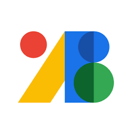
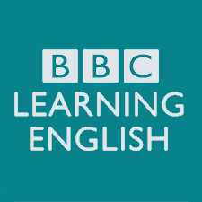
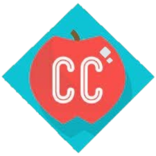
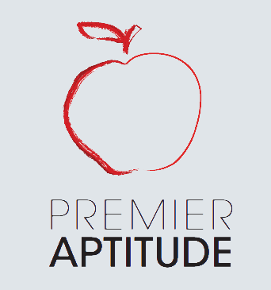

工具 ilovepdf EZ學習歷程 canva flaticon MagicPattern open peeps unsplash Power of PPT slidesgo selfone whimsical xmind 4cUrls notion google fonts reurl illustimage fontspace
英文 voicetube BBC Learning Engligh Crash Course TED Quizlet podcasts(spotify) geogebra cool english Online Etymology Dictionary 均一 SAT 教育部辭典 劍橋辭典